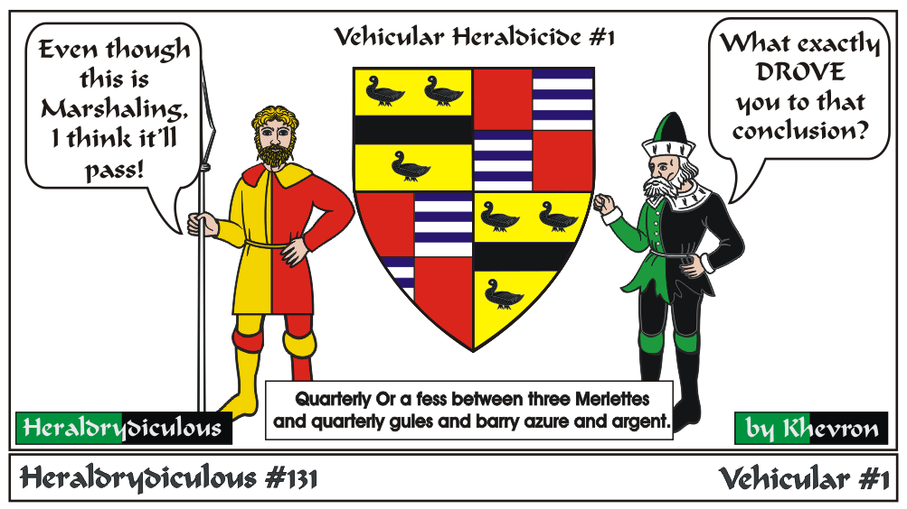

Just in time for... well, maybe not everyone's buying a car.... (I'm certainly not)
The first of several HR's on Heraldry on the road.
When Henry Ford left his second automobile company, Henry Ford Company, his financial backers tried to liquidate the company's
assets. An engineer named Henry M. Leland persuaded them to continue the company instead. They listened, and so Cadillac was born.
Cadillac's first logo was based on a family crest of a minor aristocrat that the company was named after: Antoine de La Mothe, Seigneur de Cadillac
(Sir of Cadillac). In 1701, de La Mothe founded Fort Pontchartrain which would later become Detroit. Cadillac was named after de La Mothe in 1902,
following a bicentenary celebration of the founding of the city.
Problem was, de La Mothe was never a nobility! Born Antoine Laumet, de La Mothe was forced to leave France for America under a mysterious
circumstance (some say he committed a crime or was unable to pay his debt). In the New World, he was able to assume a new identity and cobbled
together a famiy crest with elements "borrowed" from, shall we say nobler sources.
In 1998, Cadillac had a new design philosophy called "art and science" and had its logo redesigned. Gone were the six birds called the merlettes, the crown, and the entire fabricated de La Mothe family crest as the company tried to shake up its stodgy image. The new logo made its debut a few years later, looking positively like it was made by Piet Mondrian!
e-mail: 
Back to Khevron's Heraldry Page